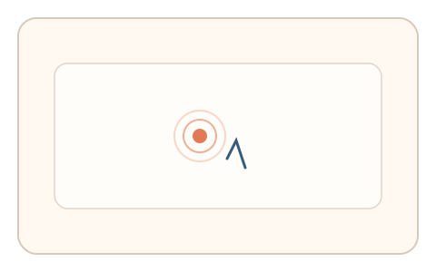
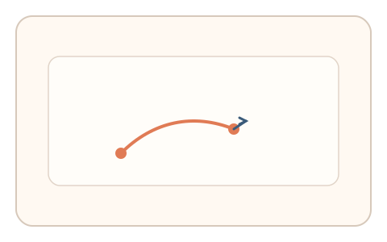

#90
Morphological Analysis - Combination Batches
已扩展
微弧双击校准
用户双击后立即拖出微弧轨迹，系统记录加速度与抖动谱并与基线比对验证真实性。
概念原文
用户完成双击后立即拖出微弧轨迹，系统记录加速度‑抖动谱并与群体基线比对。任务结构为短序列，信号形态为轨迹动力学与抖动谱。
用“微弧运动学”替代识别任务。
研究背景
短序列中的双击—微弧动作会暴露人类手部控制的非线性细节，如起始加速度、过冲与微抖动。脚本虽可生成轨迹，但难以稳定复现真实动力学特征。
核心机制
- 提示用户完成一次双击。
- 双击后立即拖出短小弧形轨迹。
- 记录加速度、过冲与抖动频谱。
- 与群体基线进行比对判定。
用户流程
- 步骤 1：用户看到双击提示。
- 步骤 2：双击后拖出微弧轨迹。
- 步骤 3：系统分析动力学并判定。
判定信号
起始加速度与过冲
人类动作起步存在稳定的动力学形态。
抖动频谱
微弧轨迹包含生理噪声结构。
判定逻辑
加速度曲线与抖动谱需落在人类分布区间；过度平滑或过度一致判异常。
对抗面
- 脚本生成固定微弧轨迹
- 重放真实用户的拖拽序列
防御与缓解
- 随机化弧长与方向
- 加入轻微动态扰动降低模板化
- 叠加双击节奏与停顿信号进行多信号判定
可达性与风险
提供替代任务与慢速模式，避免对手部障碍用户造成负担。
- 小屏设备难以精确拖弧
- 设备采样率影响频谱质量
可视化状态

状态 1：双击提示
用户完成双击操作。

状态 2：微弧拖动
双击后拖出微弧轨迹。

状态 3：动力判定
根据动力学与抖动谱判定。
参考资料
Motor control
说明动作控制与动力学特征。
Kinematics
说明速度与加速度等运动学指标。